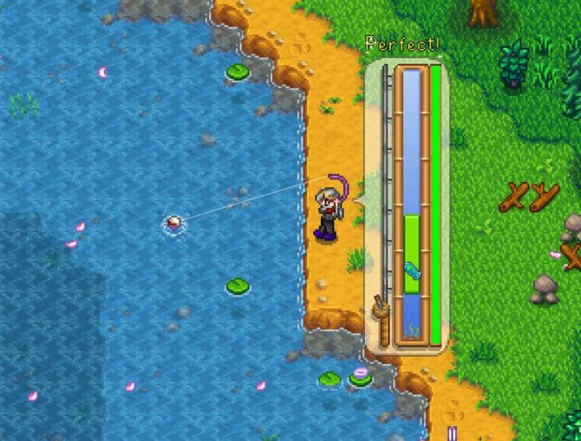
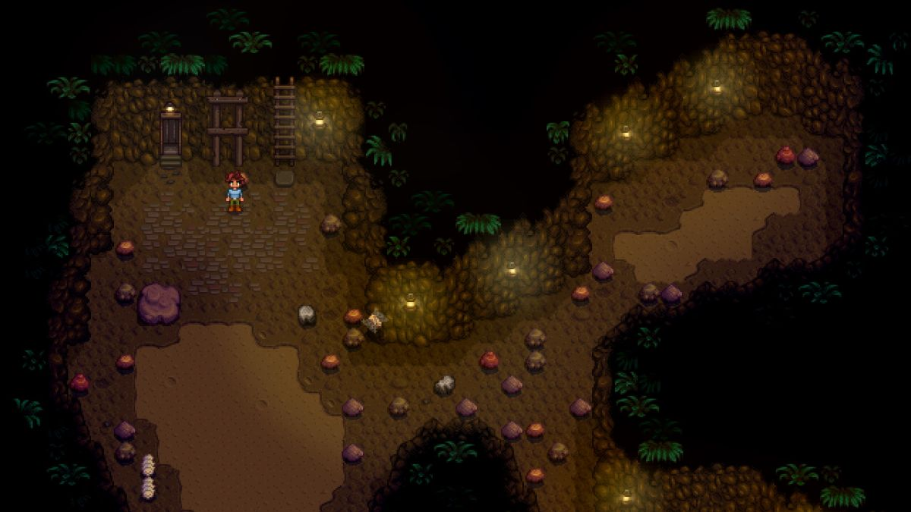
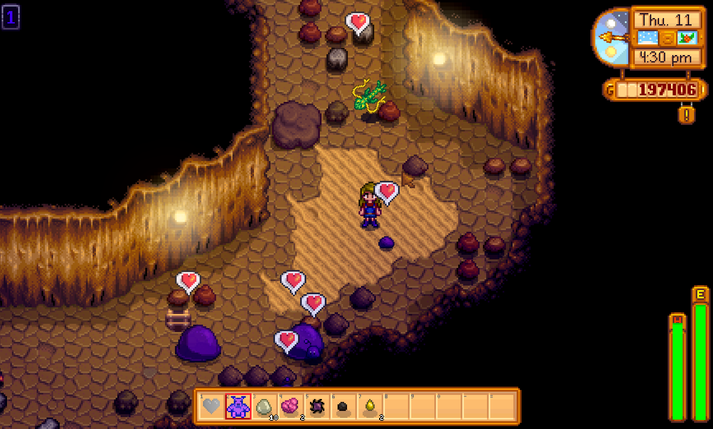

Os jogadores podem cultivar uma variedade de plantas, incluindo
frutas, legumes e
flores, e criar animais como vacas, galinhas e ovelhas para obter produtos como leite, ovos
e lã.
Pesca

Stardew Valley oferece a possibilidade de pescar em diferentes locais,
como rios,
lagos e o oceano, com diferentes tipos de peixes disponíveis em cada estação.
Mineração

Stardew Valley oferece a possibilidade de pescar em diferentes locais,
como rios,
lagos e o oceano, com diferentes tipos de peixes disponíveis em cada estação.
Combate

Stardew Valley oferece a possibilidade de pescar em diferentes locais,
como rios,
lagos e o oceano, com diferentes tipos de peixes disponíveis em cada estação.